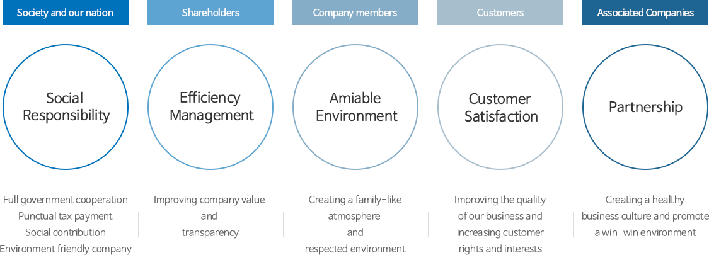
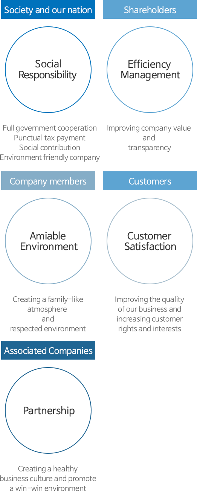

Sustainability
GS글로벌은 지속가능한 성장을 위해 ESG 경영을 추진하고 있습니다.
Ethics Management
Overview
Placing ethics management as a cornerstone, GS Global aims to be a desirable partner to associated companies, promising company
to our shareholders, respected company members and a responsible company to our society and nation.
Ethics Management


GS Global shall respect customers as they are the genuine foundation of the business. Also we aim to gain unconditional trust
from customers by providing a value for them.
(2) With regard to all products and services provided for customers, safety of customers shall be considered the highest priority.
(2) The company shall create the value that can help and satisfy customers.
(2) The company shall provide customers with the best quality products and services at a reasonable price.
Also the company shall respond to the customer’s demands promptly and accurately.
1. Respecting customers
The company shall always listen to customers and believe their requests are always right. Customers shall always be considered
as the top priority when the company conducts and makes a decision.
2. Protection of Customers
(1) All information related to customers shall not be disclosed to a third party or used
for any purpose other than the original intent.(2) With regard to all products and services provided for customers, safety of customers shall be considered the highest priority.
3. Value creation
(1) The company shall always consider customer's development as its own, and strive to discover values needed for customers.
(2) The company shall create the value that can help and satisfy customers.
4. Offering value
(1) The company shall only tell the truth and keep promise with customers at any conditions.
(2) The company shall provide customers with the best quality products and services at a reasonable price.
Also the company shall respond to the customer’s demands promptly and accurately.
GS Global shall respect laws and regulations in the area where it conducts business and gain competitiveness edge in a legitimate
way.
(2) The company shall compete fairly and shall not damage competitors' interest by taking advantage of their weaknesses.
1. Free competition
(1) The company shall respect the principles of free competition anywhere around the world and gain the trust from customers
via high quality of products and services.
(2) The company shall compete fairly and shall not damage competitors' interest by taking advantage of their weaknesses.
2. Respecting laws and regulations
The company shall carry out its business home and abroad by abiding by laws and regulations and respect the country's trading
customs.
The company shall trade based on the principles of free competition. The company shall seek for the long term common prosperity
by building a mutual trust and fair trade.
(2) The company shall carry out objective and fair assessment when selecting the business partners.
(2) The company shall not conduct any unfair business practices by abusing its position
(3) The information needed for trade shall be mutually exchanged and trade results shall be evaluated regularly on a basis of fair standard.
(2) The company shall work with the partners to promote transparent and fair trade environment.
1. Equal opportunity
(1) GS Global shall offer an equal opportunity to all firms when registering and selecting the business partners.
(2) The company shall carry out objective and fair assessment when selecting the business partners.
2. Fair trade procedure
(1) All trade will take place in an equal status and sufficient discussions will take place when reaching an agreement on
the trade terms and procedure agreements.
(2) The company shall not conduct any unfair business practices by abusing its position
(3) The information needed for trade shall be mutually exchanged and trade results shall be evaluated regularly on a basis of fair standard.
3. Pursuing joint prosperity
(1) The company shall support its partners to become competitive by providing technical assistance and management guidance.
The profit generated from the innovation shall be shared.
(2) The company shall work with the partners to promote transparent and fair trade environment.
Employees should hold honest and fair value as a member of GS Global. Also to fulfill one’s duties, all employees shall continue
self-development.
(2) Employees shall have a proper value and maintain personal and company's dignity.
(2) Employees shall fulfill their duties respecting the relevant laws and regulations.
(3) Employees shall protect the corporate assets and confidential information.
(4) Employees shall enhance work efficiency via cooperation and active communication with other workers.
(2) Employees shall not take any pecuniary advantages from the stakeholders that may alter a fair judgment.
(3) Employees shall not get involved in any unethical or immoral activities.
(2) Employees shall not abuse the company's tangible and intangible assets for personal purpose.
1. Basic ethics
(1) Employees shall be proud to be a member of GS Global and always maintain honest and fair attitudes
(2) Employees shall have a proper value and maintain personal and company's dignity.
2. Fulfilling duties
(1) Employees shall fulfill their duties in a diligent manner reflecting the corporate vision and policy.
(2) Employees shall fulfill their duties respecting the relevant laws and regulations.
(3) Employees shall protect the corporate assets and confidential information.
(4) Employees shall enhance work efficiency via cooperation and active communication with other workers.
3. Self-development
(1) Employees shall define an ideal employee model and continue to make an effort to fit into such image.
4. Fair execution of work
(1) Employees shall fulfill the duties honestly and transparently and make continuous efforts to promote a sound corporate
culture.
(2) Employees shall not take any pecuniary advantages from the stakeholders that may alter a fair judgment.
(3) Employees shall not get involved in any unethical or immoral activities.
5. Avoid conflict of interest with the company
(1) Employees shall avoid activities or relations that may cause a conflict with the company.
(2) Employees shall not abuse the company's tangible and intangible assets for personal purpose.
GS Global shall respect employees and treat them in accordance with their capabilities and accomplishments.
Also the company shall create an environment where each staff can exercise his/her creativity in full.
(2) The company shall do its best to create an environment where each staff has a great sense of pride and accomplishment just like an owner of the company.
(3) The company shall institute systems and take every possible measures to train and educate employees.
(2) The company shall assess employees fairly and reward them in accordance with their capabilities and performances.
(2) The company shall support employees to improve capability and nurture talents in the long term.
(3) The company shall respect employee's privacy and build a mature corporate culture based on mutual trust and understanding.
Also the company shall create an environment where each staff can exercise his/her creativity in full.
1. Human oriented management
(1) GS Global shall treat each staff as an independent individual based on mutual trust and understanding.
(2) The company shall do its best to create an environment where each staff has a great sense of pride and accomplishment just like an owner of the company.
(3) The company shall institute systems and take every possible measures to train and educate employees.
2. Fair treatment
(1) The company shall offer employees fair opportunities in accordance with their capabilities and performances.
(2) The company shall assess employees fairly and reward them in accordance with their capabilities and performances.
3. Promote creativity
(1) The company shall create an environment where employees are encouraged to have a creative thinking.
(2) The company shall support employees to improve capability and nurture talents in the long term.
(3) The company shall respect employee's privacy and build a mature corporate culture based on mutual trust and understanding.
GS Global shall protect shareholders' interest. Also the company shall contribute to the nation's well-being and the development
of society by developing into a sound company through efficient execution
of business.
(2) The company shall promote business expansion based on the sustainable growth.
1. Rational execution of business
(1) The company shall respect international social norms when carrying out business.
(2) The company shall promote business expansion based on the sustainable growth.
2. Protection of shareholders' profit
The company shall protect profit of shareholders via efficient management.
3. Contribution to the development of society
The company shall create jobs, pay taxes, and carry out cultural and welfare business.
4. Environmental Protection
The company shall prevent pollution and protect natural resources to preserve clean environment.
1. The company shall establish additional "Ethics Practice Regulation" for its workers to correctly interpret and act out
ethics regulations.
1.1 Purpose
This ethics practice regulation has its purpose of providing a criteria to employees to interpret the ethics regulation correctly
and make right decisions as members of GS Global.
1.2 Decision making procedure and code of conduct
1) All employees shall decide and act in accordance with ethics practice regulation when faced with ethical conflicts during
business.
2) This regulation respects the employees' healthy mindset and common sense, hence provides minimal guidelines.
All employees shall ask for consultation from their group leaders or team managers when faced with ambiguous ethics regulation criteria or doubtful decisions.
1.3. Subject of application
This regulation applies to all constituents of domestic and foreign investment companies under the management of GS Global.
It is recommended to enlighten the company associates with this regulation
as well.
2.1 Diligent business performance
1) All employees shall share the company management philosophy and understand the goals and values that the company holds.
All employees shall do their best in fulfilling their duties in rightful
manner and comply to all regulations of the company.
2) All employees shall comprehend that one’s words and actions are directly linked to the company’s trust and reputation, hence must strive to fulfill one’s role and responsibility as a member of the society.
2.2 Resolution of conflict of interests
1) All employees shall attempt to not provoke any conflicts of interest against the company, and in such cases must place
the company’s profit as a top priority. When one discovers any violation
to the aforementioned rule, one must report to group leaders or team managers.
2) A conflict of interests that an employee can practice its business influence or impact an employee’s decision or action is as follows:
- An employee directly or trilaterally deals or makes contract with another company
- An employee directly or trilaterally deals with a competing or associated company
- An employee also holds another title in an associated company without the approval of GS Global
- An employee forms business relations with associated companies such as feneration, joint investment, guarantee loans, real estate and lease of movable assets
- An employee receives compensation from associated companies or receives stocks and bonds of associated companies
- An employee’s family members or relatives dealing with GS Global and its associated companies
- An employee utilizes the company’s assets and management information to unjustly obtain personal benefits
- An employee abuses its business position to perform unjust influence during business processes such as requesting special consideration to associated companies or asking various conveniences.
3) The aforementioned clause 2 is only a partial illustration of all possible conflicts of interests, hence an employee must always strictly abide to the ethics practice regulation
2.3. Protection of company assets and information
1) All employees shall justly utilize and protect the company’s tangible and intangible assets.
2) Protection of assets
- An employee shall not use the company’s assets without approval for personal or trilateral individuals’ benefits.
- An employee shall not transfer the company assets at a low price, buy or borrow a trilateral asset in high price using company assets for oneself or for a trilateral individual.
- An employee shall immediately report to the company and devise actions to minimize losses in times of a situation which the company faces any possibilities of major losses
- An employee shall not use company budget for personal issues and will use it in accordance with company’s goals and criteria.
3) Protection of information
- An employee shall not utilize or share undisclosed information obtained during business process to trilateral individual
for personal benefits.
- An employee shall not disclose or provide company information and business secrets both internally and externally without approval. Also, all employees must fully cooperate with company’s regulation of storing and inspecting digital documents sent outside.
2.4. Acceptance of gifts and entertainment
1) An employee shall draw a clear line between business and personal matters, and execute all business with fairness and
transparency.
2) An employee shall not receive money, valuables, treats or personal convenience from associated companies and partners. However, gifts and entertainment of acceptable level within our society is permitted in order to maintain mutually healthy relationship with associates. Further detailed rules may be established and implemented within individual divisions.
2.5. Mutual respect among company members
1) All employees shall mutually respect each other and retain basic business manners to eliminate any impediments to happy
business environment and formulate healthy corporate atmosphere.
2) All employees shall not discriminate against gender, academic background, hometown, marital status, race, nationality, religion and others.
3) All employees shall not violate personal rights, sexually harass others, or impose personal burden to coworkers that may destruct the company’s working environment.
3.1 Pursuit f customer satisfaction and protection of customer information
1) The company endeavors in all manners to understand and provide products and services that satisfy the customer demand
levels on quality, reliability and safety.
2) The company shall provide accurate information regarding the products’ performance and dangers, in order to allow customers to make rational decisions.
3) The company abides by regulations regarding customer information, and safely protects all customer information in accordance to company’s policies and regulation. Moreover, the company shall not utilize or provide customer information to trilateral individual unless otherwise permitted by law or the customer themselves.
3.2 Composition and disclosure of management information
1) All accounting information is composed and maintained in accordance with acknowledged accounting principles, regulations and company policies, and shall not be distorted nor concealed.2) Disclosure of all management information regarding external associates shall be performed in transparent and fair manner.
3.3. Fair deal and competition
1) All regulations regarding fair trade must be clearly understood and conformed to.
2) All matters with a possibility of violating fair trade regulations must be dealt with sufficient consultation with legal or fair-trade related team.
3.4. Responsibilities for safety, health and environment
1) Both domestic and international agreement regarding safety, health and environment must be complied, and consistent efforts to improve the status quo must take place.2) Safety regulations must be complied to create safe working environment.
3) Importance of environmental issues must be recognized, and active participation to environmental protection shall be promoted.
4.1 Responsibilities
1) All employees are obligated to abide by ethics practice regulations, and must inquire and consult with team manager when questions arise. All employees are to act according to the interpretation given by the team leaders.2) Team managers are responsible of actively supporting and managing team members and associates to correctly understand and follow the company ethics practice regulations. Moreover, team managers must serve as a model for others by diligently and responsibly following the regulations.
4.2 Reporting violations and protecting informers
1) Any informer who discovers ethics regulation and practice violation should immediately report to group leaders or team managers for swift solution to protect the company and its members.
2) All information and details regarding informer’s report must be protected, and no disadvantages should be given to the act of whistle-blowing.
3) Information regarding channels for consultation and reporting
- Responsible branch: Internal Audit Team
- Telephone: 02-2005-5121
- Fax: 02-2005-5270
- Postal address: 10th Floor, GS Tower, Yeoksam-dong, Gangnam-gu, Seoul (135-985)
- E-mail: ethics@gsgcorp.com
4.3. Informer’s reward and violator’s disciplinary action
1) With the case of the company managed away from risks by informer’s report, the CEO may reward the informer by designating reward levels and time period in accordance with the company’s HR regulations.2) The company’s HR committee may impose disciplinary actions to the violator after comprehending the impact of violator’s infringement on ethics regulation practice.
4.4. Conforming and pledging obligation
1) All GS Global members are obligated to conform to the ethics practice regulation and pledge in written format.2) Any violation of the ethics practice regulation shall be dealt with company policies.